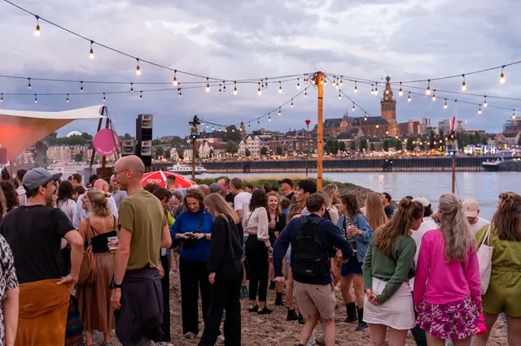
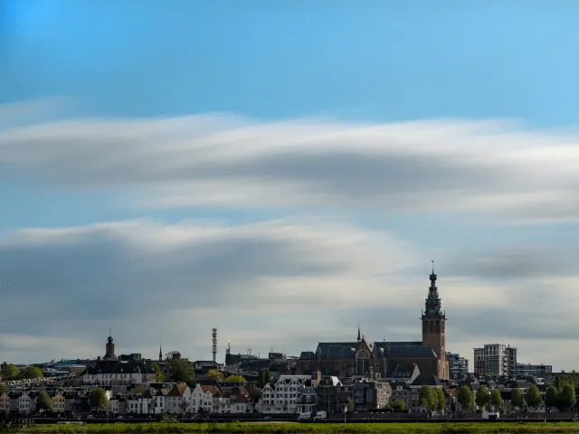
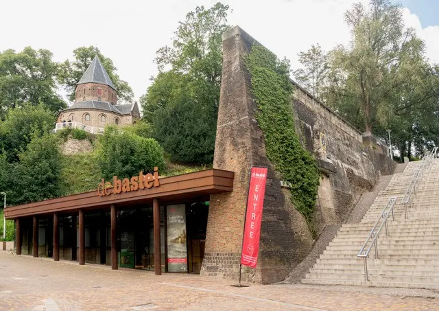

Gids
Film, theater en concerten in Nijmegen
Nijmegen heeft voor een stad van zijn grootte opvallend veel podia: drie bioscopen, waaronder arthouse LUX, twee grote zalen aan het Keizer Karelplein, poppodium Doornroosje naast het station en een reeks kleinere theaters en zalen. In de zomer komen daar de openluchtconcerten in het Goffertpark en de gratis festivals bij.
In deze gids staan de pagina's over film, theater en muziek bij elkaar, met adressen, zalen en tips. Wat er vanavond speelt, staat in de agenda.
Bioscopen
LUX aan de Mariënburg draait arthouse en heeft ook een theaterzaal, Pathé bij de Lentse Plas heeft acht zalen met Dolby Atmos en 4DX, en Vue aan de Walstraat is de knusse bioscoop met pauze.
Theater en klassiek
De Stadsschouwburg (ruim 900 stoelen) en Concertgebouw De Vereeniging (1.450 stoelen, een van de beste akoestieken ter wereld) staan tegenover elkaar aan het Keizer Karelplein. Kleiner zijn LUX, De Lindenberg, Het Badhuis en De Vasim.
Concerten en festivals
Doornroosje, Merleyn en Brebl voor pop en jazz, het Goffertpark voor de grote namen, en gratis muziek bij de Vierdaagsefeesten, het Valkhof Festival en het Bevrijdingsfestival.

Concerten in Nijmegen
Waar zijn concerten in Nijmegen? Poppodium Doornroosje (1.100 en 400 bezoekers), Merleyn, Brebl, De Vasim, Concertgebouw De Vereeniging en de grote…
Festivals in Nijmegen
Alle festivals in Nijmegen en omgeving op een rij: Vierdaagsefeesten, Valkhof Festival, Bevrijdingsfestival, Code Oranje, Music Meeting, Go Short en…

Bevrijdingsfestival Nijmegen 2027
Bevrijdingsfestival Nijmegen op 5 mei 2027 in het Hunnerpark: tijden, tickets, podia, het Vrijheidsvuur, regels, bereikbaarheid en meer rond 4 en 5 mei.
Vierdaagsefeesten Nijmegen 2027
Vierdaagsefeesten (Zomerfeesten) 2027 in Nijmegen: 17 t/m 23 juli. Alle podia en locaties, tijden, Roze Woensdag, polsbandje, bereikbaarheid en parkeren.
Agenda en cultuur
Alle voorstellingen, concerten en exposities van deze week, en de musea voor een middag cultuur.

Agenda: evenementen in Nijmegen
Wat is er te doen in Nijmegen? De agenda met concerten, exposities, markten, rondleidingen en andere evenementen in Nijmegen en de regio, elke dag…

Valkhof en Hunnerpark in Nijmegen
Alles over het Valkhof in Nijmegen: het vernieuwde Valkhof Museum (tijden en prijzen), het Valkhofpark met de Sint-Nicolaaskapel, het Hunnerpark en de…

De Bastei in Nijmegen
Bezoek De Bastei aan de Waalkade in Nijmegen: openingstijden, entreeprijzen, de Stratemakerstoren, Romeinse muren, natuur van de Waal en hoe je er komt.
Andere gidsen: eten, drinken en cultuur
Veelgestelde vragen
Welke bioscopen heeft Nijmegen?
Drie: LUX aan de Mariënburg (arthouse, zeven zalen), Pathé aan de Willem van Arenbergstraat bij de Lentse Plas (acht zalen) en Vue aan de Walstraat.
Welke theaters heeft Nijmegen?
De Stadsschouwburg en Concertgebouw De Vereeniging aan het Keizer Karelplein, LUX, cultuurhuis De Lindenberg, jeugdtheater Het Badhuis en De Vasim. In onze bedrijvengids staan 36 podia.
Waar zijn popconcerten in Nijmegen?
In Doornroosje aan het Stationsplein (zalen voor 1.100 en 400 bezoekers), in Merleyn aan de Hertogstraat en in Brebl aan de Waalbandijk. Grote concerten zijn in het Goffertpark.
Wat is er vanavond te doen in Nijmegen?
Kijk in onze agenda, met concerten, voorstellingen, films en exposities in Nijmegen en de regio, elke dag bijgewerkt.